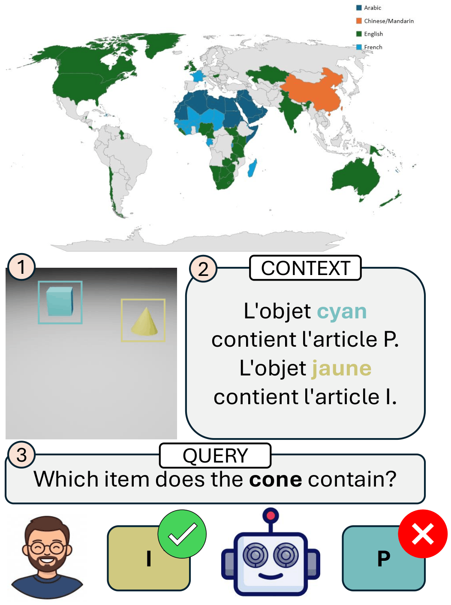
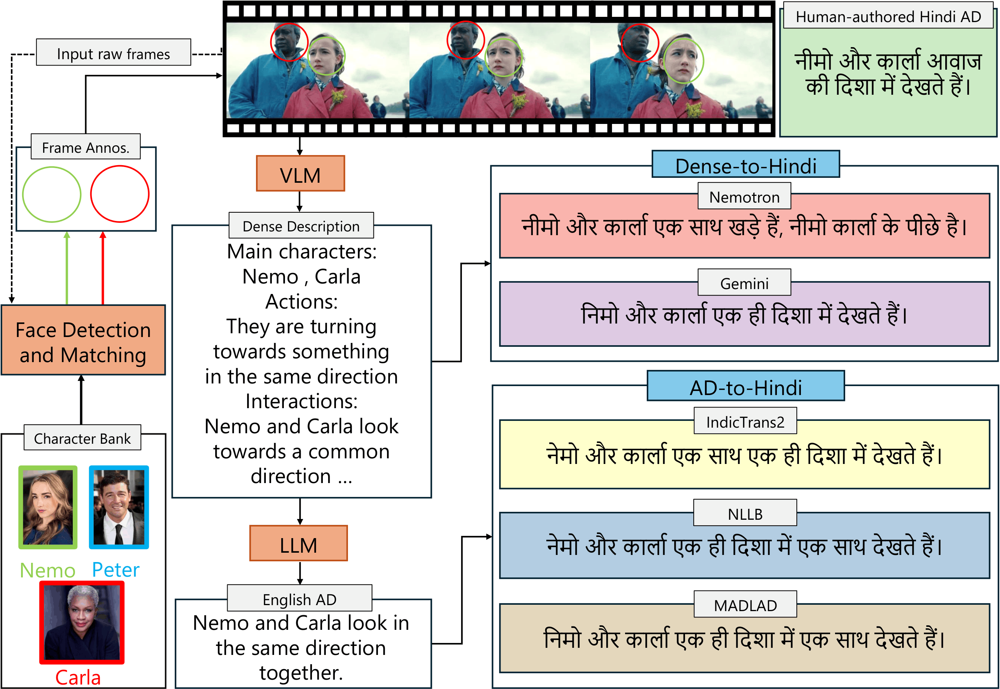
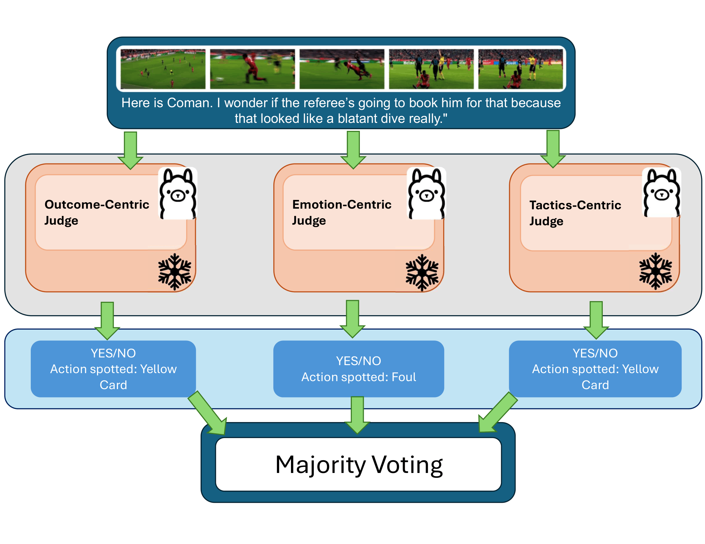
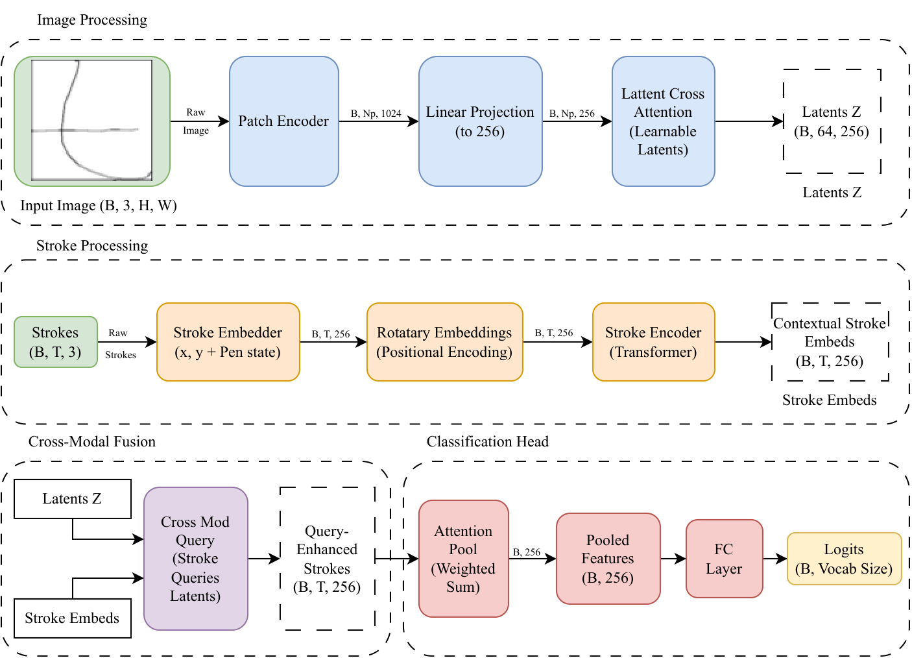
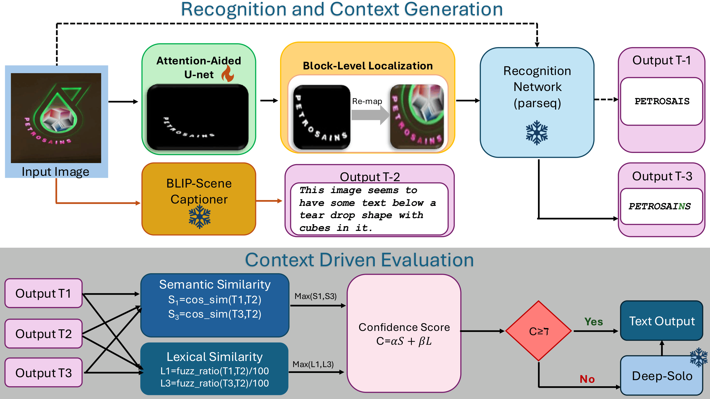
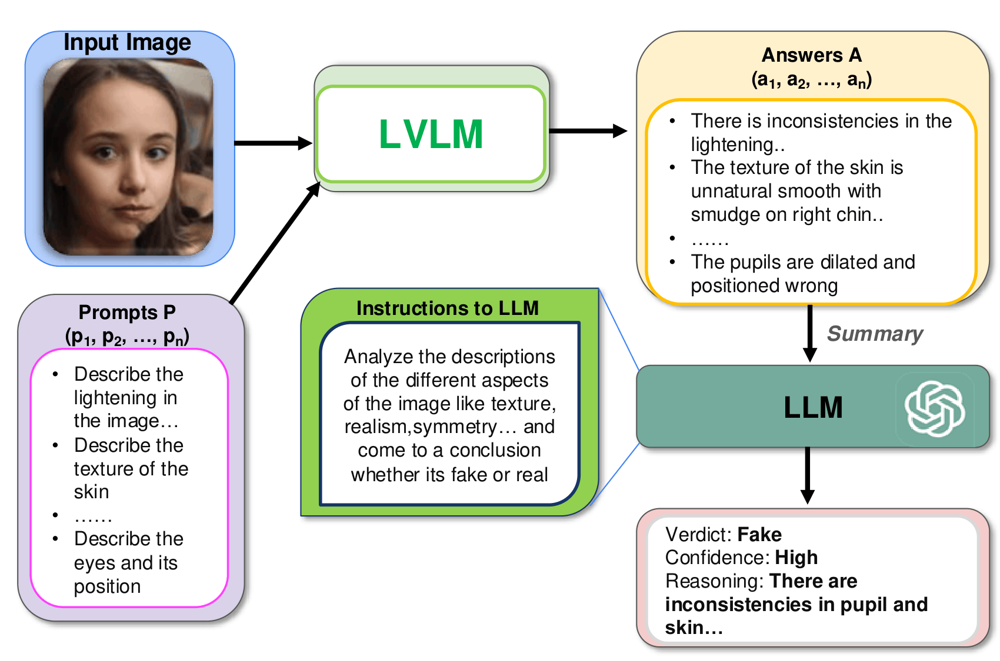

Under Review · 2026
Vision-Language Models are Fragile Multilingual Associators
R. Chakraborty, R. Chakraborty, S. Palaiahnakote, U. Pal, A. Cangelosi
Preprint soon!






Research Intern · University of Manchester
Oct 2025 – Presentwith Prof. Angelo Cangelosi
In-context mechanistic binding for vision-language models — studying multilingual concept binding and spatial grounding through a causal lens.
Research Intern · ISI Kolkata & University of Salford
Dec 2023 – Presentwith Prof. Umapada Pal & Prof. Shivakumara Palaiahnakote
Scene text and handwriting recognition, efficient guided segmentation, and cross-dataset object detection benchmarks — leading to oral papers at ICDAR and ACPR 2025.
Undergraduate Research Assistant · IIIT Hyderabad
May 2025 – May 2026with Dr. Makarand Tapaswi · Katha-AI group
Audio description for Hindi film with the Reliance AI Speech team; introduced ANDHA-DHUN, a first dataset of Hindi audio descriptions, and studied AD translation through Skopos theory.
Resident Researcher · Lossfunk, Bangalore
Jul – Aug 2025with Paras Chopra · Project Bitvision
Benchmarked 10+ open-source VLMs on QR-code understanding and built CAMBench-QR, a structure-aware benchmark for post-hoc explanations.
Research Fellow · IIIT Hyderabad (CVIT)
May – Jul 2024with Dr. C. V. Jawahar
Scene text recognition for Indic languages; built a batch-wise augmentation pipeline that cut image pre-processing time substantially.
Research Intern · Purdue University
Jan – May 2024with Prof. Vaneet Aggarwal
Reproduced and extended POSNEGDM, a trajectory-based RL model for sepsis treatment, adding Grad-CAM explanations to improve clinical trust.
Undergraduate Research Assistant · Manipal University Jaipur
May 2023 – Oct 2024with Dr. Sandeep Chaurasia
Built MANN-MITRA, a multimodal depression-detection framework, and a tool for anonymously assessing cyberbullying cases adopted by MUJ counseling.
Service. Reviewer for IEEE TIP (2025) and PAKDD 2026. Founder of VLR MUJ, Research Head at ACM SIGAI MUJ.